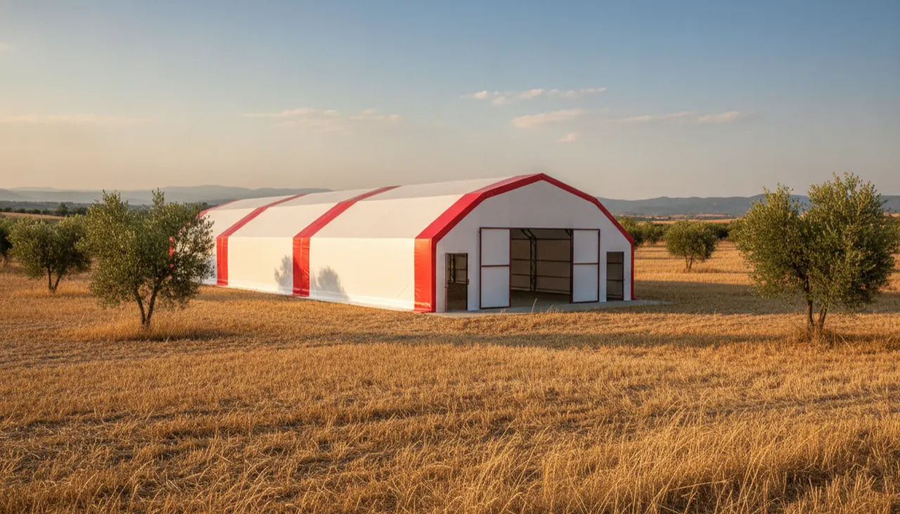

İzmir Tavuk Çadırı
İzmir'de tavuk çadırının derdi kış değil yazdır: 35-40°C'yi bulan sıcakta gölge ve hava akışı, kıyıda ise imbatla poyraza karşı sağlam ankraj. Çadırınızı bu iki gerçeğe göre kuruyoruz.

İzmir'de kümes kurmayı düşünüyorsanız kafanızdaki soruyu baştan doğru kurmak gerekir: burada tavuğun asıl düşmanı sıcaktır. İç Anadolu'da yalıtımı ayaza göre hesaplarsınız; Ege kıyısında ise mesele Temmuz-Ağustos'ta 35-40°C'yi bulan öğle sıcağında sürüyü serin tutmaktır. Kar burada neredeyse hiç görülmez, kış ılık ve yağışlı geçer. Bu yüzden tasarımın ekseni gölgeleme ve havalandırmaya kayar; İzmir için yalıtımda 3 kat yeterli oluyor, dördüncü kata ihtiyaç doğmuyor.
İl, Türkiye kanatlı üretiminin en yoğun bölgelerinden birinin tam ortasında. Küçük Menderes havzasındaki Ödemiş, Tire ve Bayındır tarımla hayvancılığın kalbi; bölgede büyük kapasiteli tavuk çiftlikleri, yumurta firmaları ve entegre tesisler faaliyet gösteriyor. Kuzeyde Bergama ile Kınık, doğuda kiraz diyarı Kiraz da bu tarım dokusunun parçası. Böyle bir çevrede çadır kümes yabancı bir fikir değil; sıfırdan bir sistemi öğrenmek zorunda kalmadan, oturmuş bir üretim kültürünün üstüne konuyorsunuz.
Diğer uçta, Urla-Seferihisar-Çeşme hattındaki hobi bahçesi ve küçük çiftlik sahipleri var. 4,5 milyonluk şehir pazarı gezen tavuk yumurtasına hazır bir talep demek; 200-500 tavukluk bir çadır kümesle bu talebe dokunmak, İzmir'de sandığınızdan gerçekçi bir iş.
İzmir'de çadır kümes kurulumu: sıcakla mücadele havalandırmayla başlar
İzmir'de yalıtımın işi kışın ısıyı tutmaktan çok, yaz öğlesinde branda üstüne vuran güneşi içeri geçirmeden yansıtmaktır. Standart 3 kat yalıtım bu yansıtma işini görür; ama tek başına Ege sıcağını çözmez. Serinliğin yarısı hava akışından gelir. Çadırı hâkim rüzgârı boydan boya süpürecek biçimde konumlandırmak, karşılıklı havalandırma açıklıkları ve gerektiğinde fan bırakmak, öğle saatlerinde iç sıcaklığı hissedilir düşürür. Çatının açık renk kalması da güneşi geri iter.
Küçük Menderes ovasında yaz sıcağı sert olduğu için fan çoğu üretici için ilk gün gereken bir ekipman; hobi ölçeğinde kıyıda ise imbat çoğu gün doğal havalandırmayı tek başına idare eder. Fan ve nipel suluk gibi ekipmanı isteğe bağlı olarak birlikte teslim ediyoruz. Sıcakta verimi neyin düşürdüğünü yumurta verimini düşüren hatalar yazısında toparladık.
Kıyıda rüzgâr, ovada zemin: kurulumun yerel gerçeği
İzmir'in coğrafyası tek parça değil, kurulum da ona göre değişir. Kıyı kesimde -Urla, Seferihisar, Çeşme- yazın imbat, kışın poyraz düzenli eser. Burada çadırın ayakta kalması ankraja bağlıdır; iskeleti zemine sağlam sabitlemek, gevşek bir kurulumun rüzgârda yorulmasının önüne geçer. Galvaniz çelik makas iskelet doğru ankrajlandığında kıyı rüzgârını sorun etmez; kritik olan ankrajın kendisidir, kazık sayısını kıyı parselinde artırıyoruz.
Ödemiş-Tire-Bayındır hattındaki ova arazilerinde ise mesele rüzgârdan çok zemindir. Çadır her zemine kurulabilir, beton şart değil; yine de hijyen ve kolay temizlik için beton ya da kilit taşı bir taban öneriyoruz. Zemin hazırlığı, su ve elektrik altyapısı size ait. Siz düz ve hazır bir zemin bırakırsınız, kurulumu biz üstleniriz. Doğru taban seçimini kümes zemini ne olmalı yazısında ayrıntılandırdık.
İstanbul'dan İzmir'e 480 km, teslim yaklaşık 10 gün
Üretim ve ekibimiz İstanbul'da; İzmir'de şubemiz yok, kurulumu merkezden gelen ekip yapar. İki şehir arası yaklaşık 480 km, karayoluyla 6 saatlik bir mesafe. Bu, lojistik açıdan rahat bir hat: çadır İstanbul'da hazırlanıp İzmir'e sevk ediliyor ve ekip yerinde kuruyor. İzmir mesafesi için ayrı bir taşıma ücreti çıkmaz.
İster İzmir merkez, ister Bergama ile Kınık gibi kuzey ilçeleri, ister Çeşme kıyısı olsun süreç aynı işler; kuzey ilçelerine giden ekip aynı sevkiyatta Bergama ve Kınık'ı tek çıkışta toparlayabiliyor. Kesin teslim gününü baştan netleştiriyoruz, çünkü tarih o dönemki kurulum yoğunluğuna göre birkaç gün oynayabilir. Hangi bölgelere gittiğimizi kurulum bölgeleri sayfasında görebilirsiniz.
İzmir'de tavuk çadırı ölçüleri ve kapasite mantığı
Doğru ölçü, kaç tavuk besleyeceğinize bağlı. 70 m²'lik bir çadır (7x10) rahat bir yerleşimle 500 tavuk alır; İzmir'de bu kapasite 95.000 TL'den başlar. Urla-Çeşme hattında gezen tavuk yumurtasıyla işe girecek biri için 500-680 tavuk bandı çoğu zaman gerçekçi bir başlangıç: hem hafta sonu pazarına, hem birkaç kahvaltı mekânına yetecek bir hacim.
Ödemiş-Tire ovasında daha büyük düşünen üretici için 140 m²'lik 7x20 çadır yaklaşık 980 tavuğa, 300 m²'lik 10x30 ise 2.100 tavuğa kadar çıkar. İzmir'in şehir pazarı büyük olduğu için kapasiteyi baştan biraz geniş tutmak, sürüyü büyütürken ikinci bir yapı derdine girmemenizi sağlar. Ölçülerin tam listesi ve iki yalıtım seçeneğinin fiyatları için fiyatlar sayfasına, başlangıç kurgusu için 500 tavukluk çadır sayfasına bakabilirsiniz.
Gezen tavuk düzeni ve folluk yerleşimi: Ege pazarına göre iç plan
İzmir'in 4,5 milyonluk pazarı gezen tavuk yumurtasına hazır talep demek; ama o etiketi hak etmek çadır kümesin içini ve dışını birlikte kurmayı gerektirir. Sürüyü gündüz dışarı bırakacaksanız çadırın uzun kenarına, hâkim rüzgârı arkanıza alan yönde bir çıkış açıklığı bırakmak işi kolaylaştırır. Dışarıya tel çitle sınırlanmış bir gezinti alanı; içeride ise tünekleri arka duvara toplayıp önü açık bırakmak, tavuğun gün boyu rahat dolaşmasını sağlar. Ege'nin sert öğle güneşinde gezinti alanının bir bölümünü zeytin ağacı ya da gölgelik altına denk getirmek, sürünün en sıcak saatlerde bile dışarıda kalmasına yardım eder.
Folluğu doğru yere koymak yumurtanın kalitesini doğrudan etkiler. Follukları çadırın en loş ve serin köşesine, tünek hattının altına değil yan duvara dizmek; her 4-5 tavuğa bir göz hesabıyla planlamak toplamayı düzenli tutar. Zemine kalın bir altlık serip düzenli havalandırdığınızda, Ege neminin yumurtayı ve altlığı bozmasının önüne geçersiniz. Bu iç düzeni gezen tavuk sistemi kurmak yazısında adım adım anlattık; çadırı bu plana göre teslim ediyoruz.
İzmir için güncel fiyatlar
Fiyatlara nakliye ve kurulum dahildir; İzmir teslimatı da ücretsizdir. 7 farklı ölçünün tamamı için fiyat tablosuna bakabilirsiniz.
Teknik künye
İzmir dahil 81 ilde aynı üretim standardı; nakliye ve kurulum her ölçüde fiyata dahildir. Ölçü ve yalıtım katı kapasitenize göre belirlenir.
- İskelet
- 40x40 mm / 2 mm galvaniz çelik makas profil
- Branda
- 650 g/m² TSE damgalı, UV dayanımlı, alev yürütmez
- İç astar
- 180 g/m² antibakteriyel, yıkanabilir
- Yalıtım
- Alüminyum bizafol — 3 veya 4 kat
- Dayanıklılık
- Standart çadırlara göre 3 kat (kar, rüzgâr, yağış)
- Garanti
- 2 yıl üretim garantisi
- Teslim
- Sipariş sonrası ~10 gün, kurulu
- Kapasite
- m² başına ~7 tavuk (70 m² ≈ 500 tavuk)
İzmir için sık sorulanlar
İzmir'e nakliye ve kurulum ayrıca ücretli mi?
İzmir'in yaz sıcağında çadırın içi aşırı ısınmaz mı?
Çeşme, Urla gibi kıyı ilçelerinde rüzgâr sorun olur mu?
Ödemiş-Tire ovasındaki tarım işletmemin yanına kurabilir misiniz?
Kar İzmir'de sorun olur mu, kışa göre ekstra bir şey gerekir mi?
Sipariş sonrası İzmir'e teslim ne kadar sürer?
İşinize yarayacak rehberler
İzmir projenizi birlikte planlayalım
Kapasitenizi ve kurulumu düşündüğünüz ilçeyi yazın; ölçüyü, yalıtımı ve teklifi aynı gün netleştirelim.
WhatsApp'tan yazın